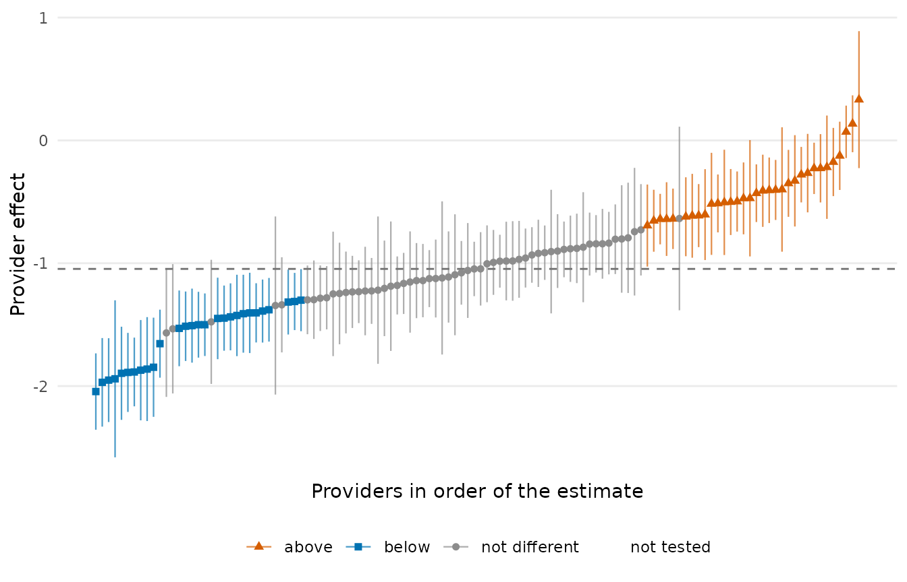
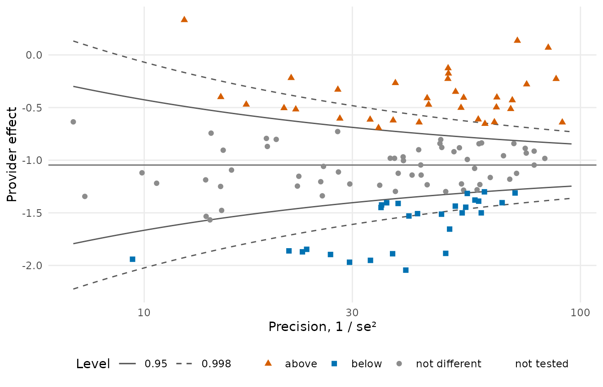
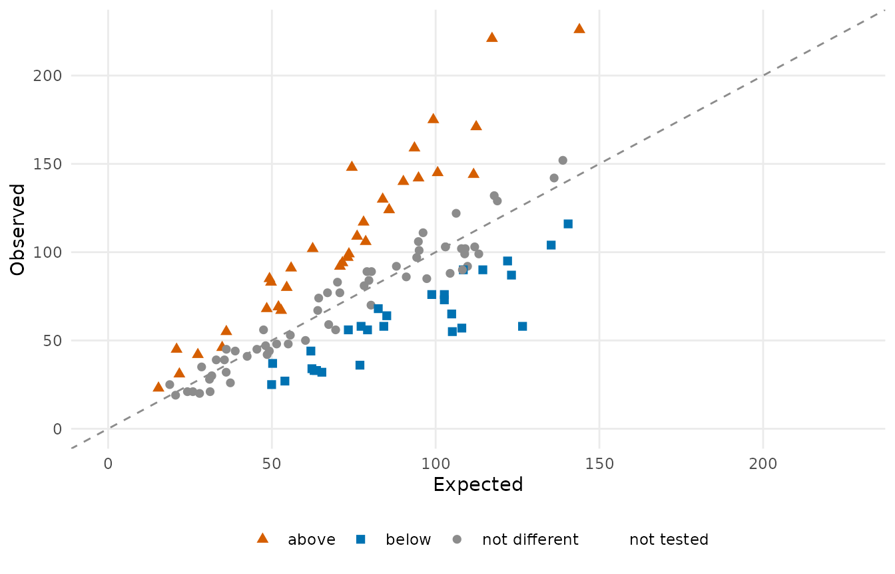
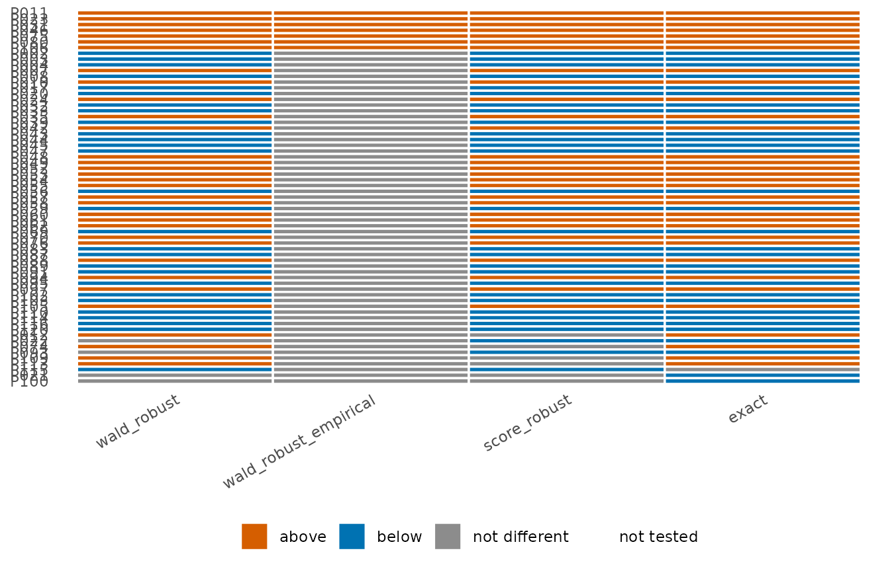

Why provider profiling, and why it is hard
Provider profiling identifies the health care providers whose quality of care is unusually good or unusually poor. It is a standard instrument of accountability in United States health policy: the Centers for Medicare and Medicaid Services profiles every Medicare-certified dialysis facility, hospital, nursing home, home health agency and transplant program in the country. A profiling measure answers one question per provider: are this provider’s outcomes better, worse or no different from what its patients would have experienced at a typical provider? The answer is a flag, and a flag carries consequences. A provider can lose its Medicare certification; it can lose part of its payment, as dialysis facilities do under the ESRD Quality Incentive Program; it can be placed under surveillance and inspected; and it is rated in public, where patients and referring clinicians read the rating.
Given these stakes, the procedure that produces a profile must be right at each of its three steps, because an error at any step misclassifies a provider: it imposes the consequences on a provider that has not earned them, or spares one that has.
- Risk adjustment. Outcomes depend on the patients as well as on the care. A provider whose patients are older and sicker looks worse than it is, and without adjustment differences in patient mix are mistaken for differences in quality. The risk-adjustment model separates the two; the provider effects it yields are the input to everything after.
- Standardization. After adjustment, each provider is held against a national norm on one interpretable scale: the ratio or the difference between the outcome under the provider’s care and the outcome expected under the norm for the provider’s own patients.
- Inference. A departure from the norm can arise by chance, and a small provider can depart widely through random variation alone. A test decides whether the departure is more than chance; only a significant departure becomes a flag.
pprof builds measures from components, one per analysis step, with the choices as arguments. This page explains the concepts behind each step and runs one analysis from data to report.
The common framework
Every measure in the package is built on the same linear predictor. For patient \(j\) of provider \(i\), observed on occasion \(k\) (a patient-month, a discharge, a period at risk):
\[\eta_{ijk} = \gamma_i + Z_{ijk}^\top \beta .\]
- \(\gamma_i\) is the provider effect: everything about provider \(i\) that the risk factors do not explain. The measure reports it, in one form or another, and the tests are tests of it.
- \(Z_{ijk}\) are the risk factors (case mix) with coefficients \(\beta\): age, comorbidities, laboratory values. Adjusting for them is what makes the comparison fair.
- The outcome determines the model through which \(\eta\) acts: a logistic model for a binary or binomial outcome, a linear model for a continuous one, a proportional-hazards model for a time to event.
Two facts about this model shape everything else. Each observation belongs to exactly one provider, so the provider effects can be estimated one provider at a time even when there are thousands of them. And the number of observations per provider varies enormously, from a handful to thousands, so the question “is this provider different?” is asked with very different amounts of information from one provider to the next.
The steps
| Step | The question it answers | Functions |
|---|---|---|
| Data | Which columns are the outcome, the risk factors, the provider, the patient? |
pp_data(), pp_check()
|
| Risk adjustment | What is each provider’s effect after adjusting for its patients, and which risk factors should the model carry? |
fit_logistic_fe(),
fit_linear_fe(), fit_cox(),
fit_*_re(), fit_*_cre(),
summary(), var_select(),
cv()
|
| Standardization | How does the provider’s outcome compare with what was expected? | standardize() |
| Inference | Is the provider different from the reference, and in which direction, judged against the theoretical null or an empirical null? |
test(), confint(),
test_measure(), null_model(),
calibrate()
|
| Reliability | How much of the variation between providers is signal rather than noise? | iur() |
| Plots | What does the result look like? |
plot(), flag_stability()
|
Risk adjustment
The provider effects are fixed effects: one free parameter per provider, never shrunk toward the average, because the effect is what the measure reports. Dropping them and fitting a pooled model biases the risk-factor coefficients whenever case mix is related to the provider (it almost always is); the fixed-effect fit is the standard the measures are built on. The package fits thousands of provider effects efficiently because the provider block of the information matrix is diagonal (the SerBIN algorithm), and offers a Firth-penalized fit for providers whose outcomes are all the same, random-effect and correlated-random-effect models for comparison, and the two-stage stratified Cox model for survival outcomes. See Risk-adjustment models.
Variable selection is part of the same step. When the risk factors
are not fixed in advance, var_select() fits a lasso or
group-lasso path with the provider effects left unpenalized, and
cv() chooses the penalty by cross-validation; the selected
risk factors then enter the model above. See Variable selection.
Standardization
A standardized measure summarises the fit as one number per provider that can be compared across providers. Indirect standardization compares the provider’s observed total with the total its own patients would have had at a reference provider: the observed-to-expected ratio \(O_i / E_i\), or a difference. Direct standardization applies the provider’s effect to every patient in the population: the rate the whole population would have had at this provider. The two answer slightly different questions and are both available; see Standardized measures.
Inference
For each provider the null hypothesis is \(\gamma_i = \gamma_0\), with \(\gamma_0\) the median of the provider effects (a robust “typical provider”). The test has three ingredients that are chosen independently:
- the statistic: Wald (estimate over standard error), score (the estimating function at the null, which exists even when the estimate does not) or exact (the finite-sample distribution of the provider’s total);
- the variance: naive (treating observations as independent), robust (clustered by patient) or stabilized (clustered, with the within-patient correlation pooled over all patients, for small providers);
- the reference distribution: the theoretical \(N(0, 1)\), or an empirical null fitted to the bulk of the statistics within groups of providers of similar size.
One analysis from start to finish
A binary outcome recorded once per patient-month, patients nested in
providers, three risk factors. sim_kecc() simulates data of
this shape; with real data the first line is
read.csv().
library(pprof)
d <- sim_kecc(n_providers = 120, provider_size = c(12, 80), rows_per_patient = c(1, 12),
seed = 2026)
head(d)
#> provider patient n y x1 x2 x3
#> 1 P075 P075-016 1 0 -1.6488686 1 0.2970750
#> 2 P052 P052-050 1 0 -0.1592499 0 0.1087772
#> 3 P095 P095-052 1 0 -0.7859098 0 1.3338958
#> 4 P112 P112-021 1 0 -0.4856163 1 -1.2497120
#> 5 P037 P037-005 1 0 -1.0219925 1 -1.0605784
#> 6 P047 P047-007 1 1 1.1704326 0 0.54222251. Declare the columns
pd <- pp_data(d, y = "y", x = c("x1", "x2", "x3"), provider = "provider",
patient = "patient", cutoff = 10)
#> Checking missing values ...
#> Checking variation in covariates ...
#> Checking pairwise correlation among covariates ...
#> Checking variance inflation factors ...
#> Checks completed.
#> Prepared data: 36554 rows, 120 providers, 5674 patients
#> outcome y (binary); 3 covariates
#> 120 providers with at least 10 patients included; 0 excluded
#> included providers with no events: 0; with all events: 0
#> event rate among included rows: 25.7%Providers with fewer than cutoff patients stay in the
data but are not fitted. Rows are sorted by provider and patient; a
patient’s rows keep their order.
2. Fit the risk-adjustment model
fit <- fit_logistic_fe(pd)
fit
#> Logistic model with fixed provider effects (SerBIN)
#> 36554 rows, 120 providers, 3 covariates; binary outcome
#> log-likelihood -18997.7; iterations 5
#> provider effects: median -1.046, range -2.0445 to 0.3318
summary(fit)
#> covariate estimate se statistic p lower upper
#> 1 x1 0.4969054 0.01351429 36.76890 0.000000e+00 0.4704179 0.5233929
#> 2 x2 -0.3897303 0.02637278 -14.77775 2.038776e-49 -0.4414200 -0.3380405
#> 3 x3 0.3066443 0.01285489 23.85429 0.000000e+00 0.2814492 0.3318394summary() gives the risk-factor coefficients with Wald
tests; coef(fit) holds the provider effects
gamma and the coefficients beta.
3. Standardized measures
sm <- standardize(fit, type = "indirect")
head(sm)
#> provider observed expected ratio rate variance_expected
#> 1 P001 70 80.26928 0.8720647 0.2240162 55.89887
#> 2 P002 36 76.88502 0.4682316 0.1202795 57.95869
#> 3 P003 58 77.23446 0.7509601 0.1929068 55.86183
#> 4 P004 76 98.82063 0.7690702 0.1975589 69.27352
#> 5 P005 39 35.50402 1.0984670 0.2821745 24.15496
#> 6 P006 50 60.25239 0.8298426 0.2131702 43.51187
direct <- standardize(fit, type = "direct")
head(direct)
#> provider observed expected ratio rate variance_expected
#> 1 P001 70 7846.053 0.8355754 0.2146428 5809.035
#> 2 P002 36 4381.942 0.4666605 0.1198759 3707.690
#> 3 P003 58 6812.311 0.7254857 0.1863629 5251.685
#> 4 P004 76 6921.496 0.7371135 0.1893499 5313.281
#> 5 P005 39 9941.173 1.0586979 0.2719586 6765.948
#> 6 P006 50 7510.478 0.7998379 0.2054625 5634.4044. Test the provider effects
The Wald statistic with the patient-clustered (robust) variance,
against the median provider; statistic = "score" gives the
score test instead, which exists even for a provider whose outcomes are
all the same:
tst <- test(fit, statistic = "wald", variance = "robust")
tst
#> Provider tests: wald statistic, robust variance; null median = -1.046; two.sided, level 0.95
#> 120 providers: 33 above, 28 below, 59 not different, 0 not tested
#> provider estimate se null_value statistic p flag lower upper
#> P001 -1.2381 0.1698 -1.046 -1.1302 2.584e-01 0 -1.571 -0.9052
#> P002 -1.9696 0.1839 -1.046 -5.0205 5.154e-07 -1 -2.330 -1.6091
#> P003 -1.4250 0.1690 -1.046 -2.2418 2.497e-02 -1 -1.756 -1.0938
#> P004 -1.4043 0.1668 -1.046 -2.1481 3.171e-02 -1 -1.731 -1.0775
#> P005 -0.9052 0.2567 -1.046 0.5489 5.831e-01 0 -1.408 -0.4021
#> P006 -1.2967 0.1630 -1.046 -1.5379 1.241e-01 0 -1.616 -0.9773
#> ... 114 more rows
table(tst$flag)
#>
#> -1 0 1
#> 28 59 335. Calibrate with an empirical null
The statistics of the providers are more spread out than \(N(0, 1)\) because providers differ in ways the risk factors do not capture. An empirical null fitted within size groups asks whether a provider is unusual among providers of its size:
en <- null_model("empirical", tst, n_groups = 4)
en
#> Empirical null: 4 group(s) by rank, huber estimator
#> group n_providers n_fitted min_size max_size null_mean null_sd converged
#> 1 30 30 12 31 0.6672 2.165 TRUE
#> 2 30 30 31 47 -0.4216 3.011 TRUE
#> 3 30 30 47 64 1.3854 3.783 TRUE
#> 4 30 30 64 80 -0.9628 2.886 TRUE
cal <- calibrate(tst, en)
table(theoretical = tst$flag, empirical = cal$flag)
#> empirical
#> theoretical 0 1
#> -1 28 0
#> 0 59 0
#> 1 26 7The same in one call:
test(fit, statistic = "wald", variance = "robust", null_model = "empirical").
See Reference distributions for the fitted null
itself (plot(en)) and the choices it offers.
6. Reliability
expected <- stats::plogis(stats::median(coef(fit)$gamma) + fit$linear_predictor)
iur("bootstrap", obs = fit$data$y, expected = expected, provider = fit$data$provider,
n_boot = 50, seed = 1)
#> Bootstrap inter-unit reliability: 0.9219 (120 providers)
#> between variance 0.1114, within variance 2.87, effective size 304.27. Plots
Three views of the test of step 4: the provider effects in order with their confidence intervals, the funnel plot, and observed against expected events.
plot(tst)
plot(tst, type = "funnel")
plot(sm, test = tst)
The funnel plot draws the control limits of the test it shows, here
\(\gamma_0 \pm c \cdot se\) against the
precision \(1 / se^2\), so a provider
lies outside the limits exactly when it is flagged. The same calls draw
a calibrated test (plot(cal, type = "funnel"), one set of
limits per size group) and a score test (observed over expected events
against \(E^2 / V\)); see Plots.
8. Flags under the alternatives
A measure report states how the flags depend on the choices made. Collect the flags of several tests:
st <- flag_stability(
wald_robust = tst,
wald_robust_empirical = cal,
score_robust = test(fit, statistic = "score", variance = "robust"),
exact = test(fit, statistic = "exact"))
st
#> Flags under 4 scenarios: 65 providers (7 flagged under every scenario)
#> provider wald_robust wald_robust_empirical score_robust exact n_flagged
#> P011 1 1 1 1 4
#> P023 1 1 1 1 4
#> P031 1 1 1 1 4
#> P046 1 1 1 1 4
#> P075 1 1 1 1 4
#> P080 1 1 1 1 4
#> P106 1 1 1 1 4
#> P002 -1 0 -1 -1 3
#> P003 -1 0 -1 -1 3
#> P004 -1 0 -1 -1 3
#> ... 55 more rows
plot(st)
Where to go next
- Data preparation: units, repeated observations, the cutoff, survival columns, checks.
- Risk-adjustment models: logistic, linear and Cox models; fixed, random and correlated random effects; Firth; the pooled shortcut.
- Variable selection: lasso and group lasso with the provider effects kept, cross-validation.
- Standardized measures: indirect and direct standardization, ratios, rates and differences, standard errors, measure-level tests.
- Tests of provider effects: statistics, variances, intervals, one-sided tests, Poisson tests for survival measures.
- Reference distributions: the theoretical and the empirical null, calibration, decisions.
- Reliability: inter-unit reliability.
- Plots: every display, with the data it needs.